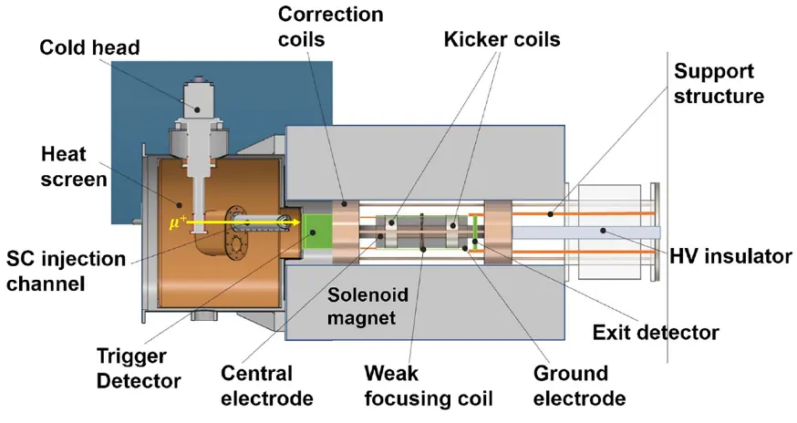

Our paper “Construction and characterization of a muon trigger detector for the PSI muEDM experiment” has been accepted in The European Physical Journal C (86, 911, 2026). 📄 Read the paper (preprint: arXiv:2603.27483). The first author is our PhD student Guan Ming Wong.


The muEDM experiment at PSI will search for the muon’s electric dipole moment with the frozen-spin technique. Muons entering the storage solenoid must be identified within about 140 ns so that a pulsed magnetic kicker can be fired in time. The upgraded trigger uses a 0.1 mm-thin gate scintillator and a thicker active-aperture scintillator, read out by SiPMs: a muon that hits the gate but not the aperture generates the trigger in under 10 ns.
The detector was characterised with 22.5 MeV/c positive muons at PSI’s πE1 beamline, and a Geant4 simulation reproduced the measured event topologies to about 97%. The results show the detector is ready for the Phase-1 setup of the experiment. This work builds on the prototype reported earlier in Radiation Detection Technology and Methods, and was carried out with colleagues from PSI and the University of Pisa.
课题组论文《Construction and characterization of a muon trigger detector for the PSI muEDM experiment》（PSI muEDM 实验缪子触发探测器的研制与性能测试）已被The European Physical Journal C（86, 911, 2026）接收发表。📄 阅读论文（预印本：arXiv:2603.27483）。论文第一作者为课题组博士研究生黄冠铭。
瑞士保罗谢勒研究所（PSI）的 muEDM 实验将利用冻结自旋技术寻找缪子的电偶极矩。进入储存螺线管的缪子必须在约140 ns内被识别，以便及时触发脉冲磁冲击器（kicker）。升级后的触发系统由一块0.1 mm厚的薄门控闪烁体和一块较厚的有效孔径闪烁体组成，均由硅光电倍增管（SiPM）读出：当缪子击中门控闪烁体而未击中孔径闪烁体时，系统可在10 ns内产生触发信号。
研究团队在 PSI 的 πE1 束流线上利用22.5 MeV/c正缪子对探测器进行了性能测试，Geant4 模拟对实测事例拓扑的复现程度约为97%。结果表明，该探测器已可用于实验的第一阶段（Phase-1）装置。本工作是在此前发表于Radiation Detection Technology and Methods的原型机研究基础上开展的，并与 PSI 及比萨大学的合作者共同完成。